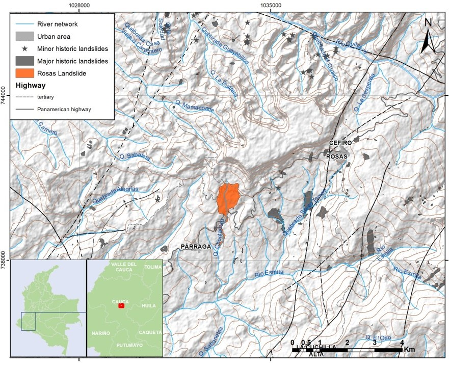
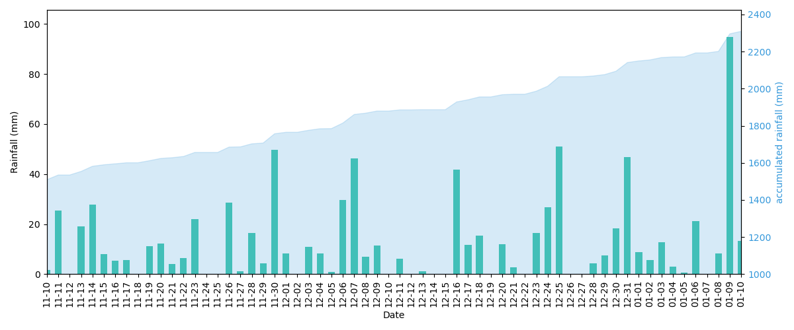

Landslides are natural disasters with devastating impacts on human communities. Like other natural hazards, their severity can escalate, especially with ongoing global climate change. Moreover, larger landslides can result in diverse forms of damage and, in the worst-case scenario, casualties. To address these challenges, advanced technologies such as UAV-based photogrammetry and LiDAR are currently being utilized to assess large landslides rapidly and cost-effectively. However, the precise georeferencing, co-registration, and alignment of UAV surveys collected from different devices with varying resolutions and coverage present significant challenges for data analysis. To tackle these challenges, this work explores different methods to ensure accuracy in the pre-processing of this type of data.
Introduction
On January 9th, 2023, a catastrophic landslide severely impacted the upper basin of Chontaduro Creek, located in the municipality of Rosas-Cauca in southwestern Colombia (refer to Figure 1). This event caused extensive damage to the communities of La Soledad, Santa Clara, Párraga Viejo, and Chontaduro, resulting in the destruction of at least 150 homes and a significant portion of the Pan-American highway, which connects southern Colombia to the rest of the country. Inhabitants of the region reported their initial observations of instability on January 4th when they noticed small cracks with lengths ranging from 20 cm to 30 cm forming in the crown area near the Alfonso Córdoba school. However, it was not until the period between the afternoon of January 9th and the morning of January 10th that the landslide’s progression became starkly evident, leaving distinct markings on both the crown and flanks of the movement. Following this significant event, the landslide exhibited continuous and substantial activity until January 18th. By January 10th, the area affected by the mass movement had expanded to 64.72 hectares, and it further increased to 87.16 hectares by January 13th, ultimately reaching 89.12 hectares by January 18th.
The Rosas landslide, situated in Colombia, has been closely monitored by several government institutions, including the Unidad Nacional de Gestión del Riesgo (UNGRD), the Geological Survey of Colombia (SGC), and the National Armed Forces. These agencies have conducted numerous UAV (Unmanned Aerial Vehicle) flights to monitor the ongoing evolution of the landslide. Over the past decade, there has been a notable increase in the utilization of remote sensing technology for landslide mapping and monitoring. This surge in usage has been complemented by significant improvements in the spatial resolution of remote sensing technologies, particularly with the introduction of laser scanning (both airborne and terrestrial) and unmanned aerial vehicles (UAVs) (Niethammer et al. (2012)). Earth observation methods are useful to produce detailed multi-temporal sets of images, orthophotos, and digital elevation models (DEMs). These products may provide insight into the flow kinematics such as flow rate, landslide expansion, and accumulation at the toe zone or retreating scarps. In addition, these new techniques allow volume calculations of the accumulated and removed material by the landslide and mapping of the topographic changes (Lucieer et al. (2014)).
Furthermore, recent advances in photogrammetric image processing and computer vision have resulted in a technique known as Structure from Motion (SfM). Highly detailed 3D models can be obtained from overlapping multi-view photography with SfM algorithms. While spaceborne and airborne remote sensing techniques are commonly employed for landslide research, these methods may lack the flexibility offered by the novel remote sensing platform of UAVs. When combined with UAV technology, Structure from Motion (SfM) can provide a cost-effective and efficient means of acquiring dense and accurate 3D data of the Earth’s surface. In this study, we investigate various methods for processing the extensive UAV data acquired for the Rosas landslide, aiming to produce accurately georeferenced and aligned 3D models.
This internship was supervised by Prof. Dr. Bodo Bookhagen.
Study area
The Rosas landslide occurred in the rural district of La Soledad, located within the municipality of Rosas-Cauca, situated in the southwestern region of Colombia. This region lies within the Patía Valley intercordilleran depression, nestled between the Western Cordillera and the Central Cordillera of Colombia. The primary drainage network affected is that of the Chontaduro creek, a tributary of the Esmita River, which is part of the upper Patía River basin (refer to Figure 1).

The study area is situated within the western range of the Colombian Andes, a region characterized by its susceptibility to landslides. This vulnerability arises from a combination of factors including steep terrain, adverse weather conditions, and the presence of soils derived from volcanic deposits originating from the Sotará volcanic complex. A comprehensive study conducted by the Geological Survey of Colombia-SGC (SGC (2020)), examined the development and distribution of landslide in the region. Their investigation identified a total of 273 landslide events occurring within the municipality of Rosas during the period spanning from 1990 to 2019. Of these occurrences, five were deemed severe, leading to tragic casualties, substantial economic losses, and considerable damage to critical infrastructure.
As depicted in Figure Figure 1, the area has a historical record of being affected by landslides of varying magnitudes. However, the Rosas landslide, which is the focal point of our study, stands out as the largest landslide identified in the surrounding region since 1990.
Geological setting
The geological setting of the study area is profoundly influenced by its location within the Northern Andes, where the convergence of three tectonic plates—the Nazca, Caribbean, and South American plates—gives rise to active N-NE faulting within the Andean block. This convergence, with the Nazca plate moving eastward relative to northwestern South America at a rate of 6 cm/yr, leads to the formation of the Colombia-Trench to the west and the mountain range of the Colombian Andes Pulido (2003). Within the Colombian Andes, three distinct mountain ranges—the Western, Central, and Eastern Cordillera—converge southward into a unified range, shaped by deformation and faulting resulting from the interaction of these tectonic plates Taboada et al. (2000). The study area, encompassing the upper Patía River basin, is situated at the southern Colombian Andes’ convergence point between the Western and Central Cordilleras. Here, the Western Cordillera rises dramatically from the Pacific Coastal Plain on its western flank, while to the east, it is separated from the Central Cordillera by the Cauca-Patia valleys spanning a distance of approximately 500 km. The Cauca-Patia valley, resembling a graben-like structure, is characterized by an asymmetric tilt and is filled with Tertiary-Quaternary continental clastics and volcanics. Bounded by the Cauca fault zone to the west and the Romeral fault zone to the east, this depression effectively separates the oceanic Western Cordillera from the ancient crystalline Central Cordillera (Figure 2).

Landslide event characterization
The Rosas mass movement, situated within the micro-basin of Chontaduro creek, is characterized as an active rotational landslide of a complex nature, exhibiting retrogressive and widening behavior. This landslide initiation point is positioned 900 meters from the summit of Broncazo Hill and 700 meters from its base (Figure 3).
The landslide displays distinct patterns of movement and failure mechanisms across its various sections. In the uppermost region, known as the crown, where the movement commences, displacements are attributed to a rotational failure mechanism. Moving to the flanks, which constitute the lateral sides of the landslide, translational faults predominate. Within the body of the landslide, one observes intense deformation, sinking, and the formation of cracks, both transverse and parallel to the primary crown (Figure 4). In the lowermost part of the movement, termed the toe, situated furthest from the crown, translational landslides, soil block falls, and flows of earth, debris, and mud have been observed. These flows are channeled through areas with lower slopes. The dynamic interplay of these movements signifies the complex nature of the landslide, with its activity and behavior evolving in response to variations in water availability in the upper part of the basin.
Geology and failure surface
The initial phase of the mass movement was characterized by a rotational slide, evidenced by a semicircular curved and concave upward rupture surface. This phase exposed a vertical scarp reaching heights of up to 20 meters, composed of alternating layers of residual ash soils and pyroclastic flows from the Galeón Formation. Subsequently, a portion of the body adjacent to the crown tilted backward due to the concavity of the failure surface, resulting in ground subsidence. When the central region of the landslide became fully saturated with water, copious flows of earth and rock emanated from both sides of the landslide, as well as from its center.
In the microbasin of Chontaduro creek, a geological sequence unfolds, comprising both epiclastic and volcanic rocks attributed to the Galeón Formation (TQpg). Notably, these formations are prominently exposed in areas such as Cerro Broncazo and its environs, encompassing the Quilcacé and Esmita rivers. In these regions, the volcaniclastic deposits can attain substantial thicknesses, reaching up to 800 meters.
This geological sequence stands out due to its distinctive characteristics, featuring abrupt scarps and gently sloping layers. These geological features are attributed by researchers to recent tectonic movements associated with the Mosquerillo-La Tetilla fault, a component of the Romeral Fault System.
Rainfall as trigger mechanism
According to the Atlas of Colombia (IGAC (2012)), the region experiences an average annual rainfall of 2,000 mm at the summit of the Central Cordillera and 3,000 mm at the summit of the Western Cordillera. Rainfall patterns indicate a distinct summer season during June, July, August, and September, followed by a rainy season during the remaining months. The precipitation data for the study area was obtained from the Párraga weather station (Station Code: 52010050), which is managed by IDEAM (Instituto de Hidrología, Meteorología y Estudios Ambientales de Colombia). The time series analyzed encompasses 33 years of recorded data, spanning from 1990 to 2023 (Figure 3). The study region experiences two distinct rainy seasons: the first occurs from January to May, characterized by relatively lower rainfall compared to the second rainy season, which typically occurs between October and December.
The daily time series recorded at the Párraga station exhibits a range of maximum daily precipitation values, varying between 0 mm and 95 mm. The highest recorded value, 94.8 mm, was documented on January 9th, which coincided with the onset of the landslide event (Figure 5). The cumulative rainfall data is meticulously computed over the 30-day period leading up to the triggering of the landslide, revealing an impressive total rainfall accumulation of 539.8 millimeters recorded up to January 9, 2023 (Figure 6).


Methods
Aerial digital photographs of the landslide were captured on multiple occasions between January 9th and March 18th. Predominantly, these flights were conducted at an altitude of 250 meters. Over the span of 17 days, a total of 22 flights were executed by three organizations specializing in risk management and emergency disaster response: Unidad Nacional para la Gestión del Riesgo (UNGRD), Servicio Geológico Colombiano (SGC), and Policía Nacional (PNAL). Despite the involvement of various institutions, uniformity was maintained in the equipment used, ensuring consistent resolution in the photographs. However, aspects such as flight altitude, coverage area, flight plan design, and the number of captured images exhibited significant variation.
A further challenge encountered in the data acquisition process was the georeferencing of the flights. During the initial flights, markers were not employed, leading to difficulties in precise location mapping. To address this, on May 18th, a set of markers was installed to ensure at least one flight could be accurately georeferenced. However, these newly placed markers proved too small to be discernible in images taken from higher altitudes. Consequently, to enhance the overall georeferencing accuracy of all flights, an independent survey was executed as part of this study, utilizing natural points as reference markers in the final survey.
Point Cloud Generation
The Structure from Motion (SfM) method uses algorithms to identify matching features in a series of overlapping digital images and calculates camera location and orientation from the differential positions of multiple matched features. From these calculations, overlapping imagery is then used to reconstruct a “sparse” or “coarse” 3D point cloud model of the photographed object or surface or scene. Brook et al. (2019). The software Agisoft Metashape was used to undertake the SfM processing. In Metashape, the SFM processing comprises three key steps Agisoft (2023):
- Alignment: Involves aerial triangulation and bundle block adjustment, where the software identifies feature points on images, matches them into tie points and determine camera positions, resulting in a tie point cloud and camera positions for depth map determination and 3D reconstruction.
- Surface Generation: Creates a 3D mesh or 2.5D digital elevation model (DEM), combining photogrammetric depth maps and LiDAR data, which can be textured and exported for various applications.
- Orthomosaic Creation: Generates a georeferenced orthomosaic by projecting images onto a chosen surface (DEM or mesh), useful for mapping and analysis, including vegetation indices in multispectral imagery projects.
In this study we adopted the workflow implemented in Agisoft Metashape, described in the User Manual v2.0 Agisoft (2023). The parameters used are described n the following sections.
Image loading and chunks definition
Sixteen distinct chunks were produced by importing photographs from selected flights (refer to Table Table 1), of which five met key selection criteria: a sufficient quantity of photographs, high image quality characterized by proper exposure and sharpness, and extensive coverage of the landslide area. This careful selection was necessary as some flights were tasked with monitoring more restricted sectors of the mass movement, targeting specific areas such as the crown or the Pan-American Highway. For comprehensive area coverage and improved model resolution during that timeframe, photographs from January 18th and 19th were merged in one single chunk.
| Chunks | Cameras | Points | Markers | Processed |
|---|---|---|---|---|
| 1/14/2023 | 1491 | 880,613 | 19 markers | X |
| 1/17/2023 | 567 | 436,618 | 4 markers | |
| 1/18-19/2023 | 878 | 1,666,175 | 17 markers | X |
| 1/19/2023 | 369 | 387,054 | ||
| 1/20/2023 | 196 | 194,101 | ||
| 1/26/2023 | 332 | 352,573 | ||
| 1/30/2023 | 321 | 351,487 | ||
| 2/3/2023 | 418 | 403.19 | ||
| 2/6/2023 | 331 | 336,810 | ||
| 2/11/2023 | 576 | 627,729 | ||
| 2/16/2023 | 329 | 346,862 | ||
| 2/19/2023 | 442 | 459,783 | X | |
| 3/6/2023 | 330 | 324,661 | X | |
| 3/21/2023 | 331 | 352.909 | ||
| 3/30/2023 | 328 | 327,605 | ||
| 5/18/2023 | 333 | 243,261 | X |
Photos alignment and filtering
In each chunk, the photographs underwent an alignment process with the accuracy setting set to high, utilizing equipment source coordinates as a reference point. Camera optimization was conducted, selecting the estimation of the covariance of tie points. Subsequently, apparent outliers were removed from the sparse cloud manually to diminish potential reconstruction inaccuracies. Additional refinement was carried out by filtering based on tie point covariance and uncertainties, employing Metashape’s integrated Python scripting capabilities for a more precise adjustment (Figure 7).

Dense Point Cloud generation
For all chosen chunks, a dense 3D point cloud was constructed employing high-quality settings and mild depth filtering. This detailed point cloud serves as the foundation for generating Digital Surface Models (DSM) and orthomosaics. Additional settings were selected to reuse depth maps, calculate point colors and calculate point confidence (Figure 8).

Natural points definition and GNSS survey
To accurately reference the point clouds, a series of natural markers were established to guarantee high-precision (centimeter-level) localization that was readily identifiable in the field. Utilized reference points included distinct features such as sewer edges, fence corners, and light posts (see Figure 9). Out of the 27 natural markers delineated (see Figure 10), only 21 were successfully surveyed on-site. The survey faced several challenges, including the demolition of referenced structures, obscuring of markers by debris or soil, and inaccessible locations of certain points. The coordinates for each marker were recorded using a Trimble SPS855 GNSS Modular Receiver.


Following the download of raw data from the Trimble receiver, the post-processing software GrafNav was employed. GrafNav is an advanced GNSS post-processing suite that supports kinematic and static analysis with an advanced processing engine for GPS, GLONASS, and BeiDou signals. To refine the data, corrections were applied using the Popayan station (POPA), which is the station nearest to the collection site. The required data were acquired from the Colombian open data portal (https://www.colombiaenmapas.gov.co/). Both the RINEX files from the field-surveyed markers and the permanent station were inputted into GrafNav to execute the correction process. The precision-adjusted positions of the markers are shown in Table 2 and Figure 11.
| Date | GPSTime | Easting | Northing | H-Ell | H-MSL | Q | SDHoriz | SDHeigh (m) | Marker |
|---|---|---|---|---|---|---|---|---|---|
| 8/09/2023 | 32:23.0 | 302995,460 | 248590,161 | 1514963 | 1486998 | 1 | 0,016 | 0,028 | 1 |
| 8/09/2023 | 59:34.0 | 302445,401 | 247995,626 | 1346507 | 1318573 | 3 | 0,12 | 0,072 | 12 |
| 8/09/2023 | 32:47.0 | 302540,380 | 247938,191 | 1342117 | 1314170 | 5 | 0,559 | 0,402 | 13 |
| 8/09/2023 | 50:24.0 | 302928,080 | 248596,004 | 1508566 | 1480608 | 3 | 0,18 | 0,112 | 2 |
| 8/09/2023 | 01:48.0 | 302956,219 | 248607,942 | 1512854 | 1484894 | 4 | 0,367 | 0,129 | 25 |
| 8/09/2023 | 25:50.0 | 302984,155 | 248601,450 | 1513498 | 1485535 | 5 | 0,257 | 0,13 | 3 |
| 8/10/2023 | 53:34.0 | 302155,060 | 247741,470 | 1338077 | 1310161 | 6 | 0,291 | 0,181 | 10 |
| 8/10/2023 | 26:29.0 | 302045,545 | 247650,392 | 1328182 | 1300273 | 3 | 0,347 | 0,215 | 21 |
| 8/10/2023 | 29:50.0 | 302207,493 | 247767,666 | 1341687 | 1313767 | 2 | 0,243 | 0,138 | 23 |
| 8/10/2023 | 03:19.0 | 302229,752 | 247892,380 | 1344103 | 1316187 | 3 | 0,343 | 0,217 | 24 |
| 8/10/2023 | 10:53.0 | 301981,062 | 248881,942 | 1547867 | 1520018 | 3 | 0,263 | 0,137 | 26 |
| 8/10/2023 | 58:14.0 | 301798,636 | 248108,698 | 1446887 | 1419024 | 3 | 0,19 | 0,117 | 4 |
| 8/10/2023 | 09:31.0 | 301847,911 | 248155,130 | 1446869 | 1419003 | 3 | 0,364 | 0,186 | 6 |
| 8/10/2023 | 31:22.0 | 301868,008 | 248170,170 | 1446827 | 1418960 | 3 | 0,147 | 0,072 | 7 |
| 8/10/2023 | 30:20.0 | 301875,048 | 248297,576 | 1452434 | 1424571 | 3 | 0,235 | 0,161 | 8 |
| 8/10/2023 | 00:47.0 | 301968,070 | 248386,332 | 1451916 | 1424048 | 4 | 0,235 | 0,09 | 9 |
| 8/11/2023 | 58:29.0 | 301263,276 | 246688,966 | 1308378 | 1280506 | 4 | 0,656 | 0,64 | 17 |
| 8/11/2023 | 40:23.0 | 301456,505 | 246350,882 | 1292738 | 1264830 | 2 | 0,054 | 0,055 | 18 |
| 8/11/2023 | 04:19.0 | 301430,773 | 246394,964 | 1296034 | 1268131 | 2 | 0,077 | 0,064 | 19 |
| 8/11/2023 | 30:58.0 | 301364,741 | 246498,245 | 1300102 | 1272211 | 4 | 0,364 | 0,259 | 20 |
| 8/11/2023 | 34:20.0 | 301586,893 | 247430,776 | 1319567 | 1291696 | 5 | 0,604 | 0,323 | 27 |
Chunk alignment
For a precise alignment of point clouds, the process begins with the correction of a designated reference point cloud; in this case, the cloud dated 01/14/2023 is used. The coordinates of the markers are revised using the data acquired from the recent field campaign. Following this update, camera parameters are re-optimized, and a new dense point cloud is generated. This newly referenced point cloud then serves as the reference for aligning subsequent point clouds through the point-based method, a technique available to align chunks within Agisoft.
ICP registration
Unlike global alignment, fine registration methods require two point clouds that already have a rough correspondence. The Iterative Closest Point (ICP) algorithm is commonly used for local refinement and has two main variants:
Point-to-point ICP
The Iterative Closest Point (ICP) registration method using the point-to-point variant was introduced by Besl and McKay (1992). This iterative algorithm consists of two stages in each iteration:
- First, for each point in the source point cloud, it searches for the closest point in the target point cloud.
- Second, it attempts to find a transformation that minimizes the distance between the corresponding points.
These two processing stages are repeated until convergence (Salvi et al., 2007).
Point-to-plane ICP
The point-to-plane variant of the ICP algorithm takes into account that scanned objects are not individual points, but surfaces. Unlike point-to-point, which tries to minimize the distance between individual points, the point-to-plane method assumes that points in the source point cloud are generally on a surface of the target point cloud. This accounts for the fact that the source and target point clouds are not necessarily identical.
The general processing procedure of the point-to-plane method is similar to that of the point-to-point approach. However, instead of searching for the closest points between the source and target point clouds, the method calculates the intersection of the point normal in the source point cloud with the tangent plane at its corresponding point in the target point cloud. Then, the algorithm attempts to find a transformation that minimizes the distance between points and the tangent planes at its correspondence points (Low, 2004). This process is repeated until convergence.
Pulli (1999) emphasize the advantages of the point-to-plane method compared to the point-to-point method. Some of the arguments and findings are:
- The point-to-plane method converges an order of magnitude faster than the point-to-point method.
- The point-to-point method typically requires at least ten times more point matching and alignment iterations than the point-to-plane method.
- The point-to-plane method is not significantly slowed down by false point pairs since each point can slide along the tangent plane of its corresponding point.